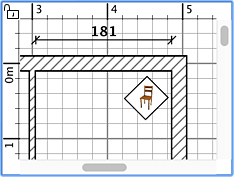

|
Per tracciare le dimensioni sulla piantina, devi prima scegliere Piantina
> Crea dimensioni o selezionare lo strumento Crea
dimensioni.
Strumento Crea dimensioni
Ogni dimensione è creata con tre clic nella piantina della casa:
- Il primo clic imposta il punto iniziale della nuova dimensione.
- Il secondo clic imposta il punto finale.
- Il terzo clic ti aiuta ad impostare la misura delle linee di estensione disegnate alla fine del processo di disegno delle
linee di estensione. Se non sposti il mouse fra il secondo e il terzo clic la nuova dimensione non avrà alcuna linea
di estensione.
In ogni momento puoi premere il tasto Esc per annullare la creazione della dimensione attuale.
Durante il secondo passaggio, ogni spostamento del mouse aggiorna nella piantina la lunghezza della linea
dimensionale che stai tracciando e la cifra che indica la lunghezza di tale linea.
|  |
 |
Creazione di una dimensione
senza
linee di estensione |
Creazione di una dimensione
con
linee di estensione |
Per finire di tracciare le dimensioni, scegli Piano >
Seleziona o seleziona lo strumento Selezione.
 Strumento
Selezione Strumento
Selezione
|